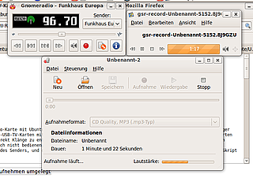

Wiki
Mitmachen
- Wikiartikel anlegen
- Howto anlegen
- Wiki-Referenz
- Wiki-Syntax
- Baustellen
- Artikelideen
- Ungetestete Artikel
- Ausbaufähige Artikel
- Fehlerhafte Artikel
- Rund ums Wiki
Konfiguration
- Backlinks anzeigen
- Exportieren
UKW-Radio mit TV-Karten ohne externen Soundausgang
Archivierte Anleitung
Dieser Artikel wurde archiviert, da er - oder Teile daraus - nur noch unter einer älteren Ubuntu-Version nutzbar ist. Diese Anleitung wird vom Wiki-Team weder auf Richtigkeit überprüft noch anderweitig gepflegt. Zusätzlich wurde der Artikel für weitere Änderungen gesperrt.
Zum Verständnis dieses Artikels sind folgende Seiten hilfreich:
Grundsätzlich ist es kein Problem, mit einer entsprechenden Radio-Karte mit Ubuntu UKW-Radio zu empfangen, es gibt einige Programme dazu. Schwieriger wird es allerdings, wenn die Karten, wie viele Hybrid-USB-TV-Karten mit FM-Tuner, keinen eigenen Soundausgang haben. Sie werden zwar als Audiokarten erkannt, allerdings ist es nicht ohne weiteres möglich, ihnen direkt Klänge zu entlocken. In den gängigen Mixer-Programmen (amixer, alsamixer etc.) ist kein Mixereintrag für den Ausgang der Karten vorhanden, oder lässt sich nicht bedienen, auch in PulseAudio erscheinen sie zwar als Eingabe-, nicht aber als Ausgabegeräte. Nutzbar sind sie aber über einen Umweg: Aufnahme des Senders, und direktes Abspielen der Aufnahme. Dafür kann das im folgenden beschriebene Skript verwendet werden.
Installation¶
Folgende Pakete müssen installiert [1] sein
gnomeradio (universe)
xautomation
gnome-mplayer (optional)
Vorbereitung¶
Zunächst muss Gnomeradio so eingestellt werden, dass überhaupt es Sender empfangen und Frequenzen verändern kann. Dazu mit dem Konfigurationseditor [6] einige der Schlüssel in /apps/gnomeradio anpassen:
device:
/dev/radio0driver:
v4l2v4l2:
1
Die weiteren Einstellungen sind relativ unbedeutend, da Gnomeradio für die Karten weder einen Mixer noch ein mixer-device verwenden kann; auch mute on exit ist überflüssig, weil Gnomeradio keinen Sound ausgeben muss/kann. Eine Terminalausgabe
VIDIOC_S_CTRL: Invalid argument
bei Betrieb des Gnomeradios ist für die beschriebene Verwendung unerheblich.
Damit der verwendete Archiv/GNOME Soundrekorder auch das richtige aufzeichnet, muss als Aufnahmequelle die FM/TV-Karte angegeben werden (beispielsweise im PulseAudio-Volume-Control-Fenster die Karte im Eingaberäte-Reiter als "Vorgabe" einstellen).
Das Skript selbst herunterladen, unter einem aussagekräftigen Namen (z.B. UKW-Skript.sh) abspeichern und ausführbar machen [5].
1 2 3 4 5 6 7 8 9 10 11 12 | #!/bin/bash # Skript zur UKW-"Umleitung" # Autor Heinrich Schwietering (c) 2009 gnome-sound-recorder & sleep 2 xte 'keydown Control_L' 'keydown R' 'keyup Control_L' 'keyup R' gnome-mplayer /tmp/gsr*.* & gnomeradio && killall gnome-mplayer sleep 1 killall gnome-sound-recorder && rm /tmp/gsr*.* exit 0 |

Verwendung¶
Das Skript im Terminal ausführen: damit wird Gnomeradio aufgerufen, unmittelbar danach startet der GNOME_Soundrekorder (und die Aufnahme); gleich darauf wird der GNOME-MPlayer mit der Aufnahme-Datei gestartet (natürlich kann auch jeder andere Player verwendet werden). Die Wiedergabe des Radioprogramms ist um einige Sekunden verzögert; man merkt es, wenn man in Gnomeradio den Sender wechselt. Mit Beenden des Gnomeradios wird die Aufnahme und Wiedergabe sofort gestoppt, die angelegte Temporär-Datei umgehend gelöscht.
Komfortabler für den Aufruf ist es, sich im Menü einen Starteintrag [4] zu erstellen und das Skript so zu starten [3].
Falls die Aufnahme nicht gestartet wird, müssen ggf. die "sleep"-Werte im Skript heraufgesetzt werden; diese sind abhängig von der Leistungsfähigkeit der verwendeten Hardware, und der Auslastung zur Zeit des Aufnahmestarts (ggf. sind auch kürzere Zeiten möglich). Dazu das Skript in einem Editor bearbeiten [2].
Diese Vorgehensweise ist Grundlage für das Skript UKW-Radio zeitgesteuert aufnehmen.
Das Verfahren funktioniert entsprechend auch mit Kradio, das Programm selbst ist allerdings schwieriger zu konfigurieren.
Alternative¶
Theoretisch sollte auch eine noch zeitnähere Umleitung des Sounds mit arecord/aplay möglich sein. Der Befehl sähe so aus:
arecord -D hw:1,0 -r 48000 -c 2 -f S16_LE --buffer-size 1000 | aplay --buffer-size 1500
als "hw" muss die tatsächliche Kartennummer eingetragen werden. Allerdings führt der Aufruf in der Praxis ggf. zu nur sehr kurzen Wiedergaben, bis es nach etlichen Pufferunterläufen zu einem Pufferüberlauf kommt:
Pufferunterlauf!!! (mindestens 33,949 ms lang) Pufferunterlauf!!! (mindestens 2353,804 ms lang) Pufferunterlauf!!! (mindestens 126,124 ms lang) Pufferunterlauf!!! (mindestens 51,523 ms lang Pufferüberlauf!!! (mindestens 1,047 ms lang) arecord: pcm_read:1617: Lesefehler: Input/output error
und die Wiedergabe beendet wird. Ggf. handelt es sich dabei aber um ein Hardware/Leistungs-Problem; auch die Werte für "--buffer-size" müssen eventuell im "try-and-error"-Verfahren für das eigene System angepasst werden.
Diese Revision wurde am 17. Mai 2017 21:15 von Heinrich_Schwietering erstellt.
- Erstellt mit Inyoka
-
 2004 – 2017 ubuntuusers.de • Einige Rechte vorbehalten
2004 – 2017 ubuntuusers.de • Einige Rechte vorbehalten
Lizenz • Kontakt • Datenschutz • Impressum • Serverstatus -
Serverhousing gespendet von